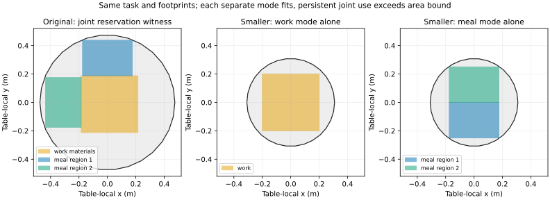

2026-11-11 · 同一个已暴露的Milan家具房间来源族 · 两个研究初始世界，非两个独立生成样本。本轮没有模型前向、训练或付费API调用。
| 世界 | 用途、人物和尺寸 | 单独活动 | 资料保留时联合共享 |
|---|---|---|---|
| 原桌面 | 资料40×40cm；两份餐区各35×25cm；住户在用餐时不另生成工作人物。两份世界任务文本SHA完全相同。 | 能 | 能：三块区域联合摆放有实际见证。 |
| XY比例0.65的派生桌面，高度不变 | 能：实际区域被源三角面覆盖。 | 不能：需0.335m²，源三角面面积和上界约0.298722m²。 |
每个世界仍有30条原生对象记录、13件家具；其余29个对象不变。派生桌面是明确标注的研究几何，不冒充原HSSD资产或合法政策缩放。共享桌面不可行也不等于完整房间任务无法通过新增工作面完成。

这是实际网格顶面与代理区域的科学图，不是新房间渲染或完整人体活动认证。餐区编号不表示已核验的椅子、人物或方向对应。
首轮浮点多边形并集造成极小伪孔洞，单独活动资格未通过。失败记录完整保留。后续用精确有理数减去源三角形，证明孔洞实际上已被输入三角面联合覆盖，再核验原有候选；未改变几何、任务、尺寸或1µm安全间隙。真实微小缝隙的独立反例仍判为未覆盖。
正确程序、忘记持续占用程序和强制分桌程序在两世界的输出分别为[True,False]、[True,True]、[False,False]。两个有依据的标签可在这三个手写程序中识别正确程序。原作者硬投票、加权硬投票、软投票也都选对；当前没有候选机制优于普通方法的证据。
Function2Scene已有多活动兼容与人群条件，SpatialGrammar已有编译器合成训练与错误链，FuncRoom-Agent已有阶段轨迹和过程奖励。本轮明确保留这些强近邻，不把可靠标签或精确算术当作新智能体算法。
本轮确立的是一个可复查、同任务的几何判别构造。它尚未证明自由语言解释、真实人类用途、跨来源泛化或完整场景生成改善；当前不应为了这一个来源族启动训练或申请更高计费资源。
可行性标签适合普通BCE或有依据程序集合的标准监督，不是人类偏好DPO数据。书第五章剩余18页已读完；当前可追溯直接阅读累计149/312页，不冒称本轮全书精读。完整算法、理论、来源和后续缺失证据如下。
研究问题与本轮证据 这一轮保留完整家具房间作为状态载体，固定同一份用途文本与同一组研究参数，仅改变初始桌面的真实几何。它补齐了此前“改变任务尺寸”与“同任务改变世界”之间的区别。两份世界共用一个已暴露来源族；不是两个独立新房间，也没有新模型错误、训练或从空房生成成绩。 一、具体可执行算法 输入为u、场景世界w、候选资源程序p。c显式声明住户在工作和用餐阶段的身份，资料持续占用两阶段，每人餐区、资料区域尺寸，以及共享座席可跨不同阶段复用。本轮c由研究者给定，没有自动解析u。 对每个阶段m构造资源占用集合O_m；持续资料的同一个区域变量进入全部相应阶段，住户在用餐时不额外生成第二个工作人物。查询是指定共享桌面能否满足全部阶段，不是要求所有设计都使用独立桌面。 表面沿用已声明的代理：取向上法线Z分量>.99且位于最高点以下3cm带内的视觉三角面投影并集。它不是严格共面的接触面，正见证不证明实际物品稳定支撑；负面积证据则对这一较宽松区域也成立。 若找到落在真实顶面且所有同时占用区域不相交的摆放，输出True及区域坐标。若每块区域所需面积之和大于顶面面积的可靠上界，输出False及面积界；否则有限搜索没找到只能输出Unknown。 原桌面有三块区域的联合见证。缩小世界中，资料单独摆放、两餐区单独摆放均有见证；但资料持续存在时需0.335m²，输入三角面投影面积之和这一保守上界约0.298722m²，严格缺口约0.036278m²。因此联合共享不可能，且这个负证据不依赖网格搜索精度或0/90朝向枚举。 二、实际遇到的失败及修正范围 首轮粗网格和四个固定居中候选未通过单独活动资格。它被保留为失败，没有换任务、桌面缩放比例、尺寸或安全间隙。 进一步检查发现GEOS浮点三角面并集产生极小孔洞。单个三角面不能覆盖整个孔洞，不代表三角面联合也不能覆盖。本轮使用分数精确表示输入有限坐标，通过凸多边形与三角形的精确半平面裁剪计算未覆盖部分。只有未覆盖面积严格等于零的孔洞才被修正；真实微小缝隙反例仍返回uncovered，不以孔洞大小阈值填洞。 随后对原有候选矩形直接计算源三角面联合覆盖。这是公开记录的几何数值修正，不是智能体创新；精确算术也不把代理区域提升成完整人体工效证明。 三、条件性正确性 源三角面T_i的投影并集U的面积不大于sum_i area(T_i)，即使面之间有重叠也成立。三个两两不相交区域的面积和固定；若所需面积大于上述上界，则不存在被U包含的联合布局。面积和由输入坐标的有理数表达计算，负证据没有把失败搜索当成不可能。 正证据是实际坐标的覆盖与不相交检查。精确覆盖算法仍只是标准计算几何：从目标凸多边形开始逐个减去源三角形，保留剩余凸片，所有片为空才返回covered；片数超限返回Unknown。它不提供任何人类偏好、舒适性、图像理解或普遍程序正确性保证。 四、候选程序的可识别性与普通对照 在原桌面/缩小桌面上，正确持续占用程序输出[True,False]；忘记持续占用程序输出[True,True]；强制必须两张桌的程序输出[False,False]。单个世界标签均不能在这三个候选中唯一确认正确程序，两个有依据的标签合起来可以。 这只是所给三程序有限类上的可识别性；程序由研究者手写，文本解释也已给定。已有fictitious-world语义解析和执行签名方法已涉及此思想。本轮实际执行的原作者硬投票、加权硬投票、加权软投票都同样选对，因此没有建立优于这些普通方法的收益。 这里的标签是可行性，不是“用户更喜欢”。改变几何也不意味着偏好必须翻转；后续数据必须包括无影响干预、原文等义表达与按来源族隔离的新几何。 五、训练目标与方法边界 可以对可信的True/False做普通BCE；未知不伪造标签。对有正确程序的样本用普通CE，只有外部标签时对一致程序集合使用标准边际似然。它们都不是新损失。不能因为两份世界输出不同就制造DPO偏好对。 SpatialGrammar已经有编译器合成数据和错误链训练，Function2Scene已有多活动兼容与活动/人群参数化，FuncRoom已有阶段轨迹和过程奖励。因此候选贡献必须证明：针对持续占用、人物复用与具体几何交互的监督，能让自由语言到真实可执行场景的决策在新来源上超过普通结构化解析+CSP、直接条件训练、整轨迹训练及同工具反馈。当前没有这项证据。 论文目标名称还必须与实际损失一致。SpatialGrammar显示式5没有标准DPO的参考模型对数几率项；原DPO式7包含这一项。本轮以四组纯数学标量核算二者损失和导数区别；由于未取得原训练代码，不能由显示式判断作者的实际实现，更不能据此宣称论文结果有误。 六、这条准备工作怎样继续服务完整三维生成 当前产物是一份完整房间状态上的受控用途判别证据，以及普通基线，不把它当作整场成功。接下来仍需把自由语言、程序选择、真实资产和可执行动作接起来，并在多来源完整生成任务中测得收益。原生两调用教师轨迹已在上一阶段就绪；当前世界变体没有新五视图，不能冒用原图构造多模态训练样本。 如果普通编译和已有条件学习已能解释全部改善，应调整候选机制的贡献定位；不将“同任务世界对”“精确检查”“追加记录”重新命名为创新。继续工作的对象是可学习的三维用途交互及其可推广收益，整体目标没有缩成桌面检测或协议检查。